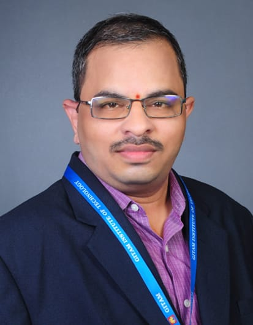

I am Ravindra Andukuri, a Mechanical Engineering professional with strong academic and technical experience in mechanical laboratories, CAD/CAM, simulation, intelligent manufacturing, condition monitoring, and research-oriented engineering applications.
My work focuses on integrating mechanical engineering with artificial intelligence, smart condition monitoring, predictive maintenance, reliability engineering, fuzzy multi-criteria decision-making, and industrial problem-solving. I am particularly interested in developing practical engineering solutions that improve the reliability, efficiency, and sustainability of modern mechanical and manufacturing systems.
Along with laboratory and technical responsibilities, I actively contribute to research publications, patent-oriented innovation, student project support, consultancy activities, technical documentation, and academic development. My long-term professional vision is to build a strong research profile in intelligent mechanical systems, smart manufacturing, and condition monitoring technologies.